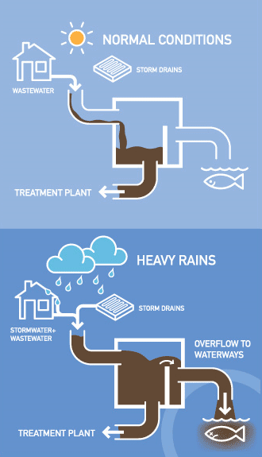
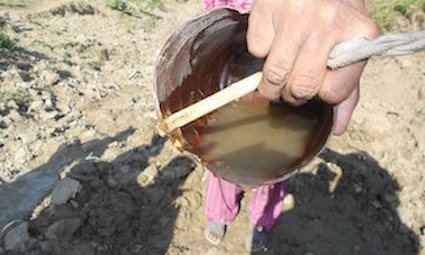
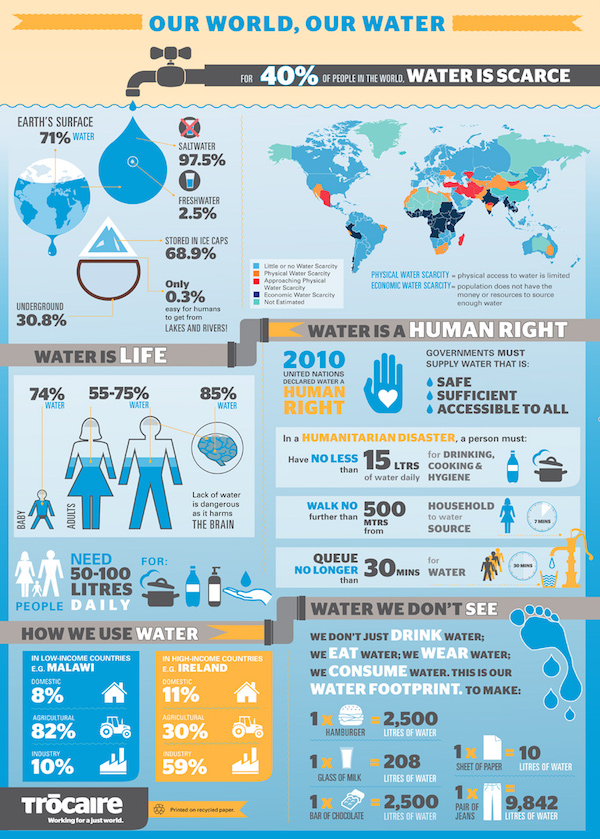
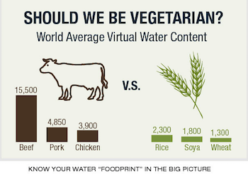

It can be hard to understand the importance of water conservancy while living in a city like New York where water scarcity isn't much of an issue. However, water conservation is important no matter where you live. Check out the information, resources, and tips provided below to better understand the importance of water conservation and how you can do your part to save water!
There is much more to water conservancy than what comes out of the faucet! Use this awesome calculator to find out just how much water you really use in your everyday life.
Conserving water can save energy. The pumps and other equipment used to bring water from its source to your faucet use significant energy to operate. For example, studies have shown that in California alone, 6.5 percent of all energy consumed goes towards moving water from one place to another. In fact, letting your faucet run for five minutes uses the same amount of energy as letting a 60-watt lightbulb run for fourteen hours. So saving water means using less energy and reducing your carbon footprint!
More than 27 billion gallons of raw sewage and polluted stormwater discharge out of 460 combined sewage overflows (CSOs) into New York Harbor alone each year. This issue is exacerbated by wasted water from New York residents. You can help prevent harmful and dangerous CSOs by conserving water, particuarly during rain and snow, when sewage systems are most likely to overflow.
Check out The Guardian's photo gallery of water scarcity around the world to gain a better perspective of what lack of access to clean water looks like around the world.
When reservoir water levels get lower and ground water tables drop, water supplies, human health, and the environment are put at serious risk. For example, lower water levels can contribute to higher concentrations of natural and human pollutants. Less water going down the drain means more water available in the lakes, rivers and streams that we use for recreation and wildlife uses to survive. Using water more efficiently helps maintain supplies at safe levels, protecting human health and the environment.
The more water taken from natural sources and used or wasted by people, the more contaminated water will become. In some cases, using excess amounts of water puts strain on septic and sewage systems, leading to contamination of groundwater, as untreated, dirty water seeps from the sewage system into the ground. Conserving water can help keep water clean and safe.
Turn water off when brushing your teeth and while shaving or washing your face. Turn it on when it’s time to rinse.
Check for leaks: Report them to maintenance ASAP to avoid mildew and mold, and, of course, water waste.
Take shorter showers: Americans use 1.2 trillions of gallons of water taking showers each year. Spend shower time cleaning yourself, not standing there zoning out.
Only wash clothes when you have a full load: This shouldn’t be too hard for students who wait until the last minute to do laundry. Just make sure you have a full load, or else you’re wasting water and energy on a half load.
One flush of the toilet uses 5-7 gallons of water! Flush sparingly if you’re in a single: If you’ve got a lot of suitemates or just a bathroom down the hall, you’ll have to flush every time out of courtesy and personal hygiene. But if you’re in a single, wait until you have to do the Number 2 to flush.
Wash clothes in cold water: This saves energy and water.
Turn off water while you wash your hair: If you need a longer shower, turn off water while you let shampoo or conditioner soak in.
Wear your jeans again: Here’s another excuse to be lazy: you can wear your jeans and other articles of clothing a few times before washing them!
Consider water footprint: You’ve heard of carbon footprint, but did you know that foods have a water footprint scale, too? Lettuce and cabbage have a water footprint of 15-24 gallons, while beef’s is up to 2500-5000 gallons.
Use one glass per day to drink from: If you’re just drinking water, use the same glass all day to reduce the need for washing.
Fill up one plate only: Use as few plates and utensils as possible to cut down on dish washing later. Do you really need a separate plate for your mashed potatoes?
Bring your own reusable glasses and bottles: Don’t use disposable cups, and minimize dish washing loads for the dining hall staff. Instead, bring your own thermos or cup to fill up on water or fountain drinks.
Learn how to compost: It’s a life skill you can use to save water.
Report leaks around campus and challenge yourself to be better about water usage.
Turn water faucets off tightly: After washing your hands or working in a lab, turn the faucets off tightly, and wait a few seconds to see if there are any drips.
Report leaks: Even if it’s not in your dorm, report leaky faucets, toilets, etc. Don’t expect someone else to do it.
Get a conservation buddy: Work with your friend, significant other, or roommate to keep each other accountable.
Write down all the ways you see people wasting water: Then check to see if you’re practicing the same dirty habits yourself.
Turn off the water while washing your hands: You don’t need the water running while you lather up.
Get others involved, too. Help your friends and family understand the importance of water conservation and share tips and tricks with them.
Join national campaigns: Sign up with the EPA’s WaterSense campaign to find out about events and literature you can share on campus.
Don’t contaminate water supplies: Don’t pour anything into water supplies, like chemicals or drugs into toilets.